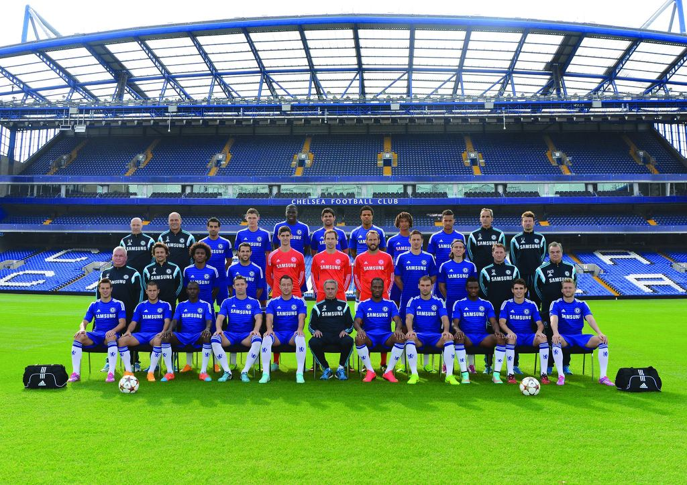

챔피언스리그에선 파리 생제르망과의 16강전, 전 시즌 리벤지 매치에서 일격을 맞고 탈락했지만 리그컵에서 토트넘을 꺾어 우승을 거두고 그리고 중반에 약간 위기가 있었으나 시즌 초반부터 줄곧 1위를 내달리며 리그우승을 차지해 더블을 달성하였다.[42]
그러나 부족한 선수층 뎁스와 후반기 들어서 주축 오스카, 파브레가스의 체력저하에 따른 부진이 문제점으로 지적되어 다음 시즌 보다 더 치열한 순위싸움을 예고하게 되었다. 그리고 우려는 현실이 되었다